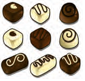
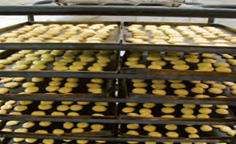
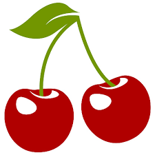
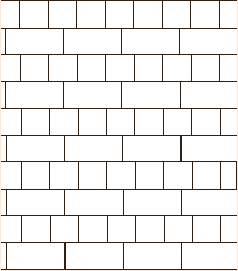

تمرين
١ــ اتوبوسی که ۳۷ مسافر داشت، خراب شد.مسافران پیاده شدند و هر تاکسی ۴ نفر از آنها را سوار کرد. برای اینکه همه ی مسافران سوار تاکسی شوند، چند تاکسی لازم است؟
پاسخ: تعداد تاکسی لازم است.
٢ــ طاها ۸۴ شکلات داشت.او در روز نیمه ی شعبان بسته های ۹ تایی شکلات درست کرد و به ۹ همسایه داد.چند شکلات برای خودش باقی ماند؟

پاسخ: تعداد شکلات برای خودش باقی ماند.
٣ــ شیرینی پزی در کرمانشاه در ۶ روز ۴۲ جعبه نان برنجی درست کرد. او در هر روز چند جعبه نان برنجی درست کرده است؟

پاسخ: هر روز تعداد جعبه نان برنجی درست کرده است.
٤ــ ۳۷ کیلوگرم گیلاس را در جعبه هایی میریزیم که هر کدام ۵ کیلوگرم گیلاس جا میگیرد.چند جعبه لازم داریم؟

پاسخ: تعداد جعبه لازم داریم.
خلّاق باش
الگوهای آجر چینی را ادامه دهید.

147